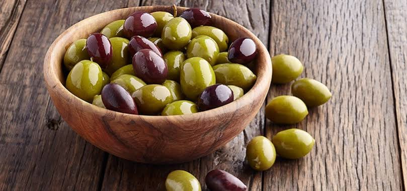
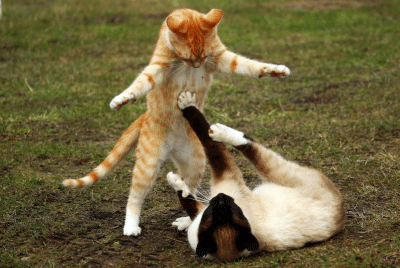

Fatos sobre gatos
Coisas que gatos amam:
- Catnip (erva pra gatos)
- Amassar pãozinhos
- Cheirar azeitonas

Top 3 coisas que gatos odeiam:
- Ir ao veterinário
- Fogos de artifício
- Invasores

Clique para ver mais fotos de gatos



Responda essa pesquisa nos ajude a entender mais sobre esses bichinhos.
PS: Se você quiser, pode anexar uma foto do seu gato para fazer parte de nossa galeria.
Quero participar da pesquisa